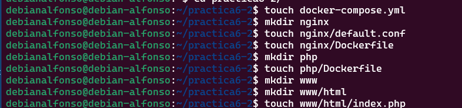

Práctica 6.2 - Despliegue de una aplicación PHP con Nginx y MySQL usando Docker y docker-compose
1.- Estructura de directorios
Cuando terminemos nuestra práctica, debería quedarnos la siguiente estructura:
/usuario/home/practica6-2/
├── docker-compose.yml
├── nginx
│ ├── default.conf
│ └── Dockerfile
├── php
│ └── Dockerfile
└── www
└── html
└── index.php
Para ello, empezamos creando todos los directorios y archivos de la siguiente forma:
mkdir practica6-2
cd practica6-2
touch docker-compose.yml
mkdir nginx
touch nginx/default.conf
touch nginx/Dockerfile
mkdir php
touch php/Dockerfile
mkdir www
mkdir www/html
touch www/html/index.php

Ahora empezamos con la creación de cada archivo
2.- Creación de un contenedor Nginx
El primer paso será crear un contenedor de Nginx dentro de nuestro directorio /practica6-2/docker-compose.yml que permita gestionar nuestra aplicación PHP. Para ello lo editamos con nano docker-compose.yml y añadimos lo siguiente:
services:
nginx:
./assets/practica6-2/image: nginx:latest
container_name: nginx-container
ports:
- 80:80
Con esto, creamos un archivo que se encarga de crear un contenedor de Nginx, que escuchará por el puerto 80 del contenedor y de nuestra máquina.
Guardamos los cambios y el siguiente paso es iniciar el proceso con sudo docker-compose up -d;

Tras la instalación, comprobamos si el contenedor esta activo con docker ps:

Ahora comprobamos que se ha creado el contenedor correctamente abriendo un navegador desde nuestra máquina física y accedemos a http://IP_Maquina_Debian, deberiamos ver un mensaje dando la bienvenida a Nginx:

3.- Creación de un contenedor PHP
Ahora editamos el archivo index.php creado anteriormente, o si no lo has creado, lo creas en el directorio /www/html/index.php y añadimos lo siguiente:
<!DOCTYPE html>
<head>
<title>¡Hola mundo!</title>
</head>
<body>
<h1>¡Hola mundo!</h1>
<p><?php echo 'Estamos corriendo PHP, version: ' . phpversion(); ?></p>
</body>
Guardamos el archivo y ahora editamos el archivo de configuración por defecto para que Nginx pueda correr nuestra aplicación, si no lo habias creado anteriormente, creamos el directorio nginx con mkdir /practica6-2/nginx y el archivo nano practica6-2/nginx/default.conf.
Dentro ponemos la siguiente configuración:
server {
listen 80 default_server;
root /var/www/html;
index index.html index.php;
charset utf-8;
location / {
try_files $uri $uri/ /index.php?$query_string;
}
location = /favicon.ico { access_log off; log_not_found off; }
location = /robots.txt { access_log off; log_not_found off; }
access_log off;
error_log /var/log/nginx/error.log error;
sendfile off;
client_max_body_size 100m;
location ~ .php$ {
fastcgi_split_path_info ^(.+.php)(/.+)$;
fastcgi_pass php:9000;
fastcgi_index index.php;
include fastcgi_params;
fastcgi_param SCRIPT_FILENAME $document_root$fastcgi_script_name;
fastcgi_intercept_errors off;
fastcgi_buffer_size 16k;
fastcgi_buffers 4 16k;
}
location ~ /.ht {
deny all;
}
}

Guardamos el archivo y ahora editamos el archivo Dockerfile, que si no lo hemos creado antes, lo creamos con nano /practica6-2/nginx/Dockerfile. Y dentro del archivo ponemos lo siguiente:

Perfecto, tras ese paso modificamos el archivo docker-compose.yml donde crearemos un nuevo contenedor PHP en el puerto 9000, que a su vez esté enlazado con el contenedor nginx, añadimos lo siguiente al fichero que anteriormente ya creamos:
services:
nginx:
build: ./nginx/
container_name: nginx-container
ports:
- 80:80
links:
- php
volumes:
- ./www/html/:/var/www/html/
php:
./assets/practica6-2/image: php:7.0-fpm
container_name: php-container
expose:
- 9000
volumes:
- ./www/html/:/var/www/html/
Quedaría así:
El siguiente paso será ejecutar otro docker-compose up -d para que se cree el nuevo contenedor y se modifique el anterior, muy importante ejecutarlo en el directorio donde está el archivo docker-compose.yml, que en este caso es /practica6-2/docker-compose.yml;
En este caso nos ha dado un error de que el puerto 80 ya está en uso, para solucionarlo, ejecutamos el comando sudo lsof -i :80, este comando nos muestra los procesos que están usando ese puerto:

Cogemos el PID del proceso general y ejecutamos un sudo kill PID:

Tras ejecutar esto, hacemos otro docker-compose up -d para asegurarnos de que se ha creado correctamente:

Ejecutamos un docker ps para ver los contenedores que están activos:

Ahora volvemos a acceder a http://IP_Maquina_Debian y deberemos ver el mensaje que pusimos en nuestro index.php

4.- Creación de un contenedor para datos
En este paso crearemos un contenedor independiente que se encargará de guardar todos los datos el cuál enlazamos con los demás contenedores. Para ello, editamos otra vez el fichero docker-compose.yml y añadimos lo siguiente:
services:
nginx:
build: ./nginx/
container_name: nginx-container
ports:
- 80:80
links:
- php
volumes_from:
- app-data
php:
./assets/practica6-2/image: php:7.0-fpm
container_name: php-container
expose:
- 9000
volumes_from:
- app-data
app-data:
./assets/practica6-2/image: php:7.0-fpm
container_name: app-data-container
volumes:
- ./www/html/:/var/www/html/
command: "true"

Ejecutamos otro docker-compose up -d.
Y verificamos que estan activos, deberiamos ver algo como lo siguiente:

5.- Creación de un contenedor MySQL
Ahora vamos a crear un contenedor MySQL el cuál enlazaremos con los demás contenedores que hemos creado. Para esto, el primer paso será modificar la imagen PHP de nuestro Docker, instalando la extensión de MySQL para PHP, para ello, editamos el archivo practica6-2/php/Dockerfile y ponemos lo siguiente:
FROM php:7.0-fpm
RUN docker-php-ext-install pdo_mysql
Tras esto, volvemos a editar el fichero docker-compose.yml para crear un contenedor MySQL y otro que contenga toda la información de la base de datos y las tablas, es decir, todos los datos. Dejaremos el fichero de la siguiente forma:
services:
nginx:
build: ./nginx/
container_name: nginx-container
ports:
- 80:80
links:
- php
volumes_from:
- app-data
php:
build: ./php/
container_name: php-container
expose:
- 9000
links:
- mysql
volumes_from:
- app-data
app-data:
./assets/practica6-2/image: php:7.0-fpm
container_name: app-data-container
volumes:
- ./www/html/:/var/www/html/
command: "true"
mysql:
./assets/practica6-2/image: mysql:5.7
container_name: mysql-container
volumes_from:
- mysql-data
environment:
MYSQL_ROOT_PASSWORD: secret
MYSQL_DATABASE: mydb
MYSQL_USER: myuser
MYSQL_PASSWORD: password
mysql-data:
./assets/practica6-2/image: mysql:5.7
container_name: mysql-data-container
volumes:
- /var/lib/mysql
command: "true"

Cuando ya tengamos guardados los cambios, procedemos a editar el archivo index.php incluyendo cambios para comprobar que se conecta correctamente a la base de datos.
Deberá verse así:
<!DOCTYPE html>
<head>
<title>¡Hola mundo!</title>
</head>
<body>
<h1>¡Hola mundo!</h1>
<p><?php echo 'Estamos corriendo PHP, version: ' . phpversion(); ?></p>
<?
$database ="mydb";
$user = "myuser";
$password = "password";
$host = "mysql";
$connection = new PDO("mysql:host={$host};dbname={$database};charset=utf8", $user, $password);
$query = $connection->query("SELECT TABLE_NAME FROM information_schema.TABLES WHERE TABLE_TYPE='BASE TABLE'");
$tables = $query->fetchAll(PDO::FETCH_COLUMN);
if (empty($tables)) {
echo "<p>No hay tablas en la base de datos \"{$database}\".</p>";
} else {
echo "<p>La base de datos \"{$database}\" tiene las siguientes tablas:</p>";
echo "<ul>";
foreach ($tables as $table) {
echo "<li>{$table}</li>";
}
echo "</ul>";
}
?>
</body>
</html>
Tras guardar estos cambios, volvemos a lanzar los contenedores otra vez con docker-compose up -d.

Y comprobamos que se están ejecutando con docker ps -a:
6.- Verificación de conexión a la base de datos
Accedemos a http://Ip_Maquina_Debian y deberemos ver lo siguiente:

Como se puede ver no aparecen tablas para la base de datos, esto se debe a que las tablas no son visibles para un usuario normal, por lo que debemos cambiar el $user por root y $password por secret en el archivo index.php, quedaría así:
<!DOCTYPE html>
<head>
<title>¡Hola mundo!</title>
</head>
<body>
<h1>¡Hola mundo!</h1>
<p><?php echo 'Estamos corriendo PHP, version: ' . phpversion(); ?></p>
<?
$database ="mydb";
$user = "root";
$password = "secret";
$host = "mysql";
$connection = new PDO("mysql:host={$host};dbname={$database};charset=utf8", $user, $password);
$query = $connection->query("SELECT TABLE_NAME FROM information_schema.TABLES WHERE TABLE_TYPE='BASE TABLE'");
$tables = $query->fetchAll(PDO::FETCH_COLUMN);
if (empty($tables)) {
echo "<p>No hay tablas en la base de datos \"{$database}\".</p>";
} else {
echo "<p>La base de datos \"{$database}\" tiene las siguientes tablas:</p>";
echo "<ul>";
foreach ($tables as $table) {
echo "<li>{$table}</li>";
}
echo "</ul>";
}
?>
</body>
</html>

Tras guardar los cambios, volvemos a acceder al navegador y veremos como aparecen todas las tablas:

7.- Esquema de la infraestructura completa de contenedores